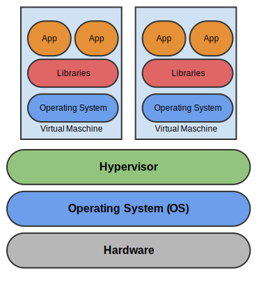
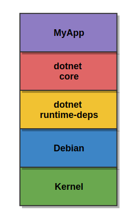
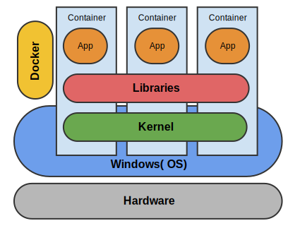
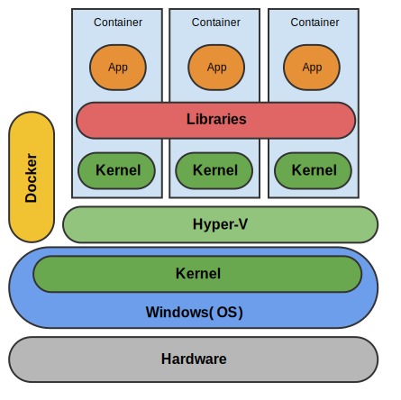

Einstieg ins Docker-Ökosystem für Linux und Windows
Magdeburger Developer Days 2018
10.04.2018

docker trainer inspect fpommereningFrank Pommerening

- Senior - Softwareentwickler
- Consultant
- Softwarearchitekt
frank@pommerening-online.de
Gründung: Mai 2012
Anzahl Mitarbeiter: 8 feste
Branchenfokus: Energiebranche
- Consulting (fachlich & IT)
- Requirements Engineering / Projektmanagement
- IT-Fachprozess-Analyse / Dokumentation
- Software-Entwicklung
- Microservices, SOA, REST, OOA und OOD, Docker
- Microsoft Technologien z.B. .NET (C#), WPF, WCF
- Datenbanken (MS SQL Server / Oracle / MongoDB)
Docker im Überblick
Anwendungsvirtualisierung: Anwendungen werden unter Verwendung von Betriebssystemvirtualisierung in Containern isoliert ausgeführt.
Virtualisierung vs. Container
Images
- Template für Container
- Snapshot / Archiv
- Readonly und versioniert
- Ebenenprinzip (Speicherung nur Differenzen)
Container
- Laufende Instanz eines Image
- nur zur Laufzeit existent
- Schreibbare Schicht wird
oberhalb des Image bereitgestellt
Docker-Ökosystem
Docker umfasst mehr als die Ausführungsumgebung für Container:| Compose / Stack | Verwalten von Anwendungsstacks |
| Hub | (öffentliche) Docker-Registry |
| Swarm | Verwaltung von Container in Clustern |
| Cloud | Hostinganbieter |
| Maschine | Bereitstellung von Docker-Hosts |
| Store | Bereitstellung zertifizierter Images |
| Kinematic | Grafisches Verwaltungswerkzeug |
Docker unter Linux
Alles neu - NEIN Verwendung von erprobten Technologien des Linux-Kernel
- LXC (BSD Jails / Solaris Zonen / OpenVZ)
- Cgroups
- Ressourcenlimits
- CPU-Zeit, Speicher, IO ...
- Namespaces
- Simulation geschlossener Umgebungen
- Hostnamen, Netzwerk, Prozesse ...
- chroot (Verbindung des Mountpunkt)


- Arch Linux
- CentOS
- Red Hat Enterprise Linux
- openSUSE / SUSE Linux Enterprise
- Ubuntu
- ...
Spezielle Docker-Host Distributionen
Windows Container
- Partnerschaft zwischen Microsoft und Docker seit 2014
- Container-Technik enthalten in
- Windows Server 2016
- Windows 10 Professional / Enterprise (ab Anniversary Update)
- Unterstützung des kompletten Ökosystems (Hub / Compose / Swarm)
- Docker-Integration Visual Studio 2017
- Azure Container Services
- SQL-Server als Linux-Container
- LCOW (Linux Container on Windows)
Isolation
Windows Container vs. Hyper-V Container 
Docker - Grundlagen
Informationen
Docker-Host
docker info [OPTIONS]den Host (OS / CPU / RAM ...).
Container
docker ps [OPTIONS] | -a / --all | zeigt Informationen zu allen, auch inaktiven, Containern |
| -l / --latest | zeigt Informationen zum letzten erstellten Container |
Container-Operationen
Erstellung
docker run [OPTIONS] IMAGE[:Tag] [COMMAND]| Name | --name [Name] (muss eindeutig im Host sein) |
|---|---|
| Startverhalten | -it (interaktives Terminal) /-d (Hintergrunddienst) |
| Volumen-Mapping | -v Quellpfad:Zielpfad |
| Port-Mapping | -p Container-Port:Host-Port |
| Endverhalten | -rm Container direkt entfernen |
Starten
docker start [OPTIONS] CONTAINER| -a / --attach | Verbindung mit der Standardausgabe herstellen. |
| -i / --interactive | Verbindung mit der Standardeingabe herstellen. |
Stoppen
docker stop [OPTIONS] CONTAINER| -t / --time | Zeit, in Sekunden, bis Container gekillt wird. |
Verbindung herstellen
docker attach [OPTIONS] CONTAINERLöschen
docker rm [OPTIONS] CONTAINER| -f / --force | Bricht den noch laufenden Container ab |
| -v / --volumes | Löscht die mit dem Container verbundenen Volumes |
Log-Meldung anzeigen
docker logs [OPTIONS] CONTAINERImage-Operationen
Anzeige
docker images [OPTIONS]| -a / --all | Zeigt alle, auch Zwischencontainer, an |
| -f / --filter | Filtert die Liste |
Herunterladen / Aktualisieren
docker pull [OPTIONS] [Registry]IMAGENAMEdocker pull myregistry.local:5000/myuser/myimageLöschen
docker rmi [OPTIONS] | -f / --force | Erzwingt das Löschen |
Erstellung aus Container
docker commit [OPTIONS] CONTAINER [REPOSITORY[:TAG]]| -a / --author | Ersteller |
| -m / --message | Commit message |
Übertragung zur Registry
docker push [OPTIONS] [Registry]IMAGENAME[:TAG] Docker-File
Ist eine Auszeichnungssprache (ML) für den Aufbau eines Docker-Images.
Die Speicherung erfolgt als Textdatei.
FROM
Basisimage[:TAG]
Imagename ggf. mit Tag auf welchem das eigene Image basieren soll
FROM ubuntu:16.10
LABEL maintainer
Email
E-Mail-Adresse des Autors
LABEL maintainer "max@mustermann.de"Veraltet: MAINTAINER
MAINTAINER Max Mustermann "max@mustermann.de"
RUN
COMMAND
Befehl zur Ausführung im Container z.B. Installieren von Software.
RUN apt-get update
ENV
VARIABLENNAME Wert
Definiert Variablen z.B. die Version oder das Datum der Aktualisierung, die auch innerhalb
der Befehle verwendet werden können.
ENV REFRESHED_AT 2017-01-25
EXPOSE
Portnummer
Definiert Ports, welche durch das Image bereitgestellt werden.
EXPOSE 8080
VOLUME
Pfad
Definiert Volume (Verzeichnis), welche durch das Image bereitgestellt wird.
VOLUME ["/mydata"]
COPY
Quellpfad
Zielpfad
Kopiert Ordner / Dateien in das Image
COPY /Publish /MyApp
ADD
Quellpfad / URL
Zielpfad
Kopiert Ordner / Dateien in das Image.
Kann auch eine URL oder eine tar-Datei sein.
ADD /Publish /MyApp
WORKDIR
Pfad
Definiert den Einstiegspfad für die Ausführung innerhalb des Containers.
WORKDIR /MyApp
ENTRYPOINT
[COMMAND, ARGS]
Definiert den Startbefehl des Images inkl. Parameter.
ENTRYPOINT ["npm", "rum", "testapp"]
CMD
COMMAND
Definiert den Startbefehl des Images inkl. Parameter.
Ein Überschreiben ist möglich.
CMD ["npm", "rum", "testapp"]Beispiel
FROM mysample:core-base
LABEL maintainer "frank@pommerening-online.de"
ENV REFRESHED_AT 2018-04-08
ENV Picflow_VERSION 0.0.1
COPY /app /home/
RUN set -x \
&& p7zip -d /home/picflow-webapp.7z \
&& mv /picflow-webapp/ /app/ \
&& apt-get purge -y --auto-remove ca-certificates wget p7zip
WORKDIR /app/
EXPOSE 5000
ENTRYPOINT ["dotnet", "WebApp.dll"]Empfehlungen
- Installiere nur notwendige Pakete
- Jeder Container hat nur einen Zweck
- Minimiere die Anzahl der Ebenen
- Sortiere Argumente
- Nutze .dockerignore - File
- apt-get update / apt-get install immer in einem Befehl
- Verwende Pipes
Hauptziele: Übersicht erhöhen / Imagegröße reduzieren
Docker-Compose

Zusammenfassung mehrerer Container zu einem Anwendungsstack
Compose-File
Eine yaml bzw. yml - Datei, welche die Struktur und Konfiguration des Anwendungsstacks definiert. Standard: docker-compose.ymlVersionen / Formate: Ohne Angabe im Header gilt Version 1!
| Format / Version | Docker-Version | Hinweise |
|---|---|---|
| 3.5 | 17.12.0+ | Isolation |
| 3.3 | 17.06.0+ | Config / Secrets |
| 3.0
3.1 3.2 |
1.13.0+
1.13.1+ 17.04.0+ |
Empfohlene Version
Erlaubt Verknüpfung mit Docker Swarm |
| 2.1 | 1.12.0+ | Healthcheck |
| 2.0 | 1.10.0+ | Networks, Dependency |
| 1.0 | 1.9.1+ | in zukünftiger Version deprecated / veraltet |
Service-Definition
Jeder Container des Anwendungsstacks ist ein Service. Deren Eigenschaften wie Name, Abhängigkeiten etc. werden im Bereich services beschrieben.
Herkunft Images
BUILD
Image wird erst während des Starts erstellt.
build:
context: ./webapp
dockerfile: Dockerfile.local
image: webbapp:latest
Vorhandenes Image
gleiches Format wie beim FROM-Klausel des Dockerfile
image: user/web:latest
Portfreigaben
Port-Container:Port-Host
ports:
- 5000:5000Hostname
hostname:Webserver1Abhängigkeiten
Es werden die (Alias)name der Services verwendet.
depends_on:
- dbserverUmgebungsvariable / Einstellungen
Format: KEY:VALUE
environment:
- setting1:value1
- setting2:value2Datenspeicher
Datenspeicher werden zusätzlich im Bereich volumes definiert.
volumes:
- data1:/app/dataNetzwerkzuordnung
Netzwerke werden zusätzlich im Bereich networks definiert.
networks:
- frontendNetzwerk-Definition
Die Definition der Netzwerke erfolgt innerhalb des Bereichs networks.Treiber
z.B. bridge oder overlay
driver: overlayOptionen
driver_opts:
- opt1: "val1"Datenspeicher-Definition
Die Definition der Datenspeicher erfolgt innerhalb des Bereichs volumes. Sie orientiert sich an der Volume-Defintion .Beispiel
version: "3"
services:
database:
image: mongodb:3.2
volumes:
- data:/var/mongo/data
networks:
- backend
webapp:
build:
context: ./webapp
ports: 5000:80
environment:
- DbConnectingString=mongodb://database
networks:
- backend
- frontend
networks:
backend:
frontend:
volumes:
data:Anwendungsstack-Operationen
docker-compose [SUBCOMMAND] [OPTIONS] | Subbefehl | Optionen | Hinweise |
|---|---|---|
| pull | Lädt die im Anwendungsstack enthalten Images herunter | |
| create | --no-cache [SERVICE...] | Erstellt das Image bzw. den alle Images des Stack |
| up | -d [SERVICE]
--build |
Erstellt / Lädt herunter / Startet einen Service inkl. Abhängigkeiten oder den gesamten Stack |
| start | [SERVICE] | Startet einen Service |
| Subbefehl | Optionen | Hinweise |
|---|---|---|
| stop | -t (timeout in s) [SERVICE] | Beendet einen Service |
| down | --rmi / -v | Stoppt und entfernt Container, Netzwerke, images und Volumes |
| rm | -v | Entfernt, nach Bestätigung, gestoppte Container und ggf. Volumes |
| exec | SERVICE COMMAND | Führt den übergeben Befehl im Service aus |
| top | [SERVICE] | Zeigt die Prozesse des Service bzw. des Anwendungsstack an |